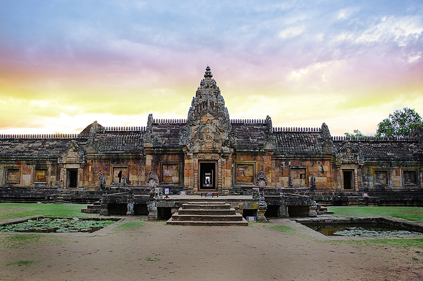

สถานที่ท่องเที่ยวในจังหวัดบุรีรัมย์
สถานที่ท่องเที่ยวในจังหวัดบุรีรัมย์
1. ปราสาทพนมรุ้ง
2. ปราสาทเมืองต่ำง

ปราสาทเมืองต่ำ หรือ ปราสาทหินเมืองต่ำ
เป็นสถานที่ท่องเที่ยวอีกแห่งที่สำคัญ
และสวยงามไม่น้อยไปกว่าปราสาทหินพนมรุ้ง ที่นี่เป็นศาสนสถานในศาสนาฮินดู
มีสถาปัตยกรรมแบบศิลปะขอมโบราณ
และสันนิษฐานว่าสร้างขึ้นในพุทธศตวรรษที่16-17
ภายในบริเวณปราสาทเมืองต่ำ
มีภาพจำหลักหินบนหน้าบันและทับหลังที่สวยงามมาก
เหมาะแก่การศึกษาด้านประวัติศาสตร์และศิลปะสมัยขอมโบราณ
มีจุดให้ถ่ายรูปสวยๆ หลายจุดภายในบริเวณปราสาท
ลักษณะสถาปัตยกรรมด้านในของปราสาทเมืองต่ำนั้น
ได้รับการก่อสร้างด้วยฝีมือช่างในระดับช่างหลวง
เรียกได้ว่าเป็นโบราณสถานที่สวยงามมาก
3. ช้าง อารีนา

4. วงเวียนอนุสาวรีย์รัชกาลที่ 1

5. วนอุทยานภูเขาไฟกระโดง